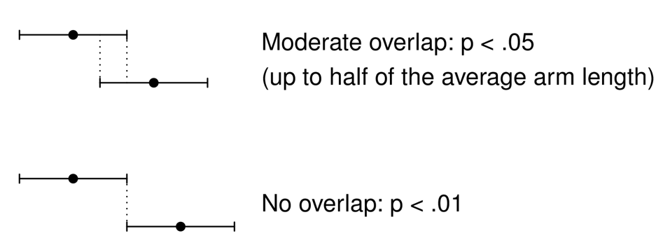
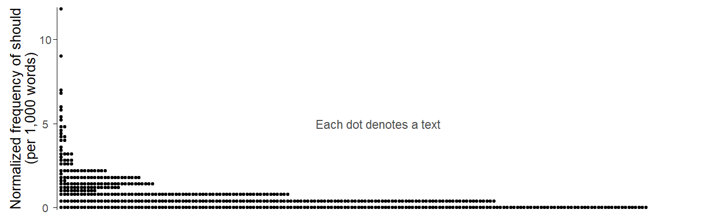
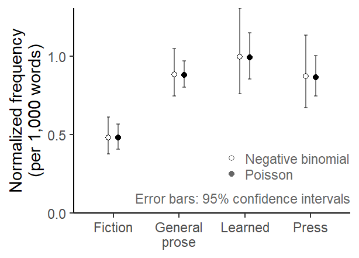
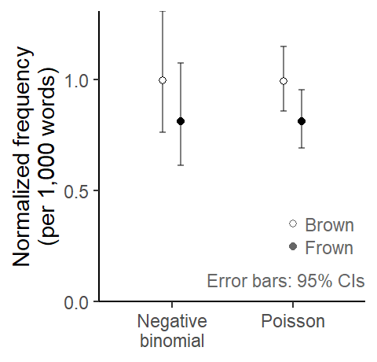

Clustering in the data affects statistical uncertainty intervals
Obstacles to replication in corpus linguistics
corpus linguistics
replication crisis
regression
clustered data
This blog post is part of a small series on obstacles to replication in corpus linguistics. It deals with a prevalent issue in corpus data analysis: the non-independence of data points that results from clustered (or hierarchical) data layouts. I show how an inadequate analysis can produce unduly narrow expectations of a replication study.
The data points drawn from a corpus often come in groups: There are typically multiple observations from the same text (or speaker). If this kind of data layout is not represented in the analysis, this will often yield spuriously precise estimates of the quantities of interest. This blog post describes how this can interfere with replication efforts in corpus linguistics.
R setup
library(tidyverse) # for data wrangling and visualizationlibrary(dataverse) # for downloading data from TROLLinglibrary(marginaleffects) # to compute model-based estimateslibrary(MASS) # to fit a negative binomial regression modellibrary(corpora) # to calculate a log-likelihood scorelibrary(kableExtra) # for drawing html tablessource("C:/Users/ba4rh5/Work Folders/My Files/R projects/my_utils_website.R")
Terminology
Before we get started, let me briefly clarify how a number of terms are used in this blog post:
Original study: The study whose results are subject to a replication effort
Replication study: A study that uses new data and repeats the original work in the closest possible way, i.e. using the same research design and methods; this type of replication is often referred to as a direct/close/exact/literal replication
Original/replication estimate: For the quantity of interest (sometimes referred to as an effect size), the point estimate returned by the original/replication study
Interpretation of confidence intervals from a replication perspective
The key point of this blog post is that an inadequate analysis of corpus data can produce unrealistic expectations of a replication study. This may lead to erroneous judgments as to the compatibility of the original and the replication estimate, and therefore incorrect conclusions about the success of a replication study.
We therefore start by considering what kind of information confidence intervals (CIs) give us about consistency and replication. It is important to clarify this because misconceptions about the meaning and interpretation of CIs are widespread.
Interpreting CI overlap
A common misconception when comparing 95% confidence intervals of two independent groups is to assume that if the error bars overlap, the difference between the groups is “not statistically significant”. A nice paper by Cumming (2009) discusses this issue. It turns out that even if the overlap is moderate, the p-value for the comparison would be p < .05. For CIs that do not overlap, it would be p < .01.
In the figure below, the upper pair of estimates illustrates a situation where the arms of two CIs overlap. Moderate overlap means that the amount of overlap is less than half of the average arm length. This means that you need to mentally approximate the average length of the overlapping arms. This is easy in the example below, because they have the same length. Overlapping amounts to roughly half of the average arm length.

While this insight is particularly relevant for comparisons made within a study, it also useful in the context of replication work. If we compare the CIs from an original and a replication study, we may see overlapping CIs. In some sense, the misconception then work in the opposite way: It invites lax judgments of replication success. Thus, when the original and replication CIs overlap, we may be tempted to conclude that the replication result is statistically compatible with the original one. As we have just seen however, this interpretation requires overlap by at least the average arm length.
Replication information provided by CIs
Another misconception about CIs relevant to the present discussion concerns the information they provide about replication estimates. As Cumming, Williams, and Fidler (2004) noted, many researchers think that, given a 95% CI, the probability that the replication estimate will fall within the limits of this interval is also 95%. They refer to this probability as the average probability of capture (APC): The probability that a CI will capture a future replication estimate.
It turns out that the APC is smaller than the confidence level. In their appendix, Cumming, Williams, and Fidler (2004) provide the mathematical background. To develop our intuition, we consider the APC for a number of frequently used confidence levels. The mapping in the table below shows that the average probability of capture for a 95% CI, for instance, is 83%.
Confidence level
Average probability of capture
68.3% (± 1 standard error)
52%
90%
76%
95%
83%
99%
93%
We keep the overlap and the replication interpretation of confidence intervals in mind as we turn to our illustrative analysis task.
Case study: The frequency of should in written AmE of the 1960s and 1990s
Our linguistic focus will be on the frequency of the modal verb should in written American English, and we will rely on data from the Brown and Frown Corpus. This allows us to work with straightforward research questions about normalized frequencies and their comparison, which are quite common in corpus work.
Further, questions about diachronic trends in the frequency of modals have generated discussions about replicability in corpus linguistics. Based on a comparison of the Brown and Frown corpus, Leech (2003) concluded that the frequency of English modal verbs declined in the latter half of the 20th century. This finding was challenged by Millar (2009), which in turn prompted a response by Leech (2011). McEnery and Brezina (2022) also used data on English modals as a case study for discussing and illustrating key ideas about replication in corpus linguistics.
English modal verbs therefore have a special place in the corpus-linguistic discourse on replication and replicability. I therefore decided to set up a dedicated TROLLing post (Sönning 2024), which includes frequency information on the English modals from the Brown Family of corpora. Perhaps this resource may be of value in future discussion on the topic. An excerpt from this dataset is used in the current series of blog posts, which concentrate on statistical issues that may get in the way of replication attempts in corpus work.
We will concentrate on a subset of these data: the modal verb should in Brown and Frown, i.e. written American English. The following questions guide our analysis:
What is the frequency of should in written American English of the early 1960s and early 1990s?
Has its frequency changed over time?
Data
We start by downloading the data directly from the TROLLing archive:
dat <-get_dataframe_by_name(filename ="modals_freq_form.tsv",dataset ="10.18710/7LNWJX",server ="dataverse.no",.f = read_tsv,original =TRUE )
The dataset we have downloaded contains text-level frequencies for nine modal verbs from six members of the Brown Family (Brown, Frown, LOB, FLOB, BE06, AmE06). It includes the following variables:
text_id: The text ID used in the Brown Family corpora (“A01”, “A02”, …)
modal: the modal verb
n_tokens: number of occurrences of the modal verb in the text
corpus: member of the Brown Family
genre: broad genre (Fiction, General prose, Learned, Press)
text_category: subgenre
n_words: length of the text (number of word tokens)
time_period: time period represented by the corpus
variety: variety of English represented by the corpus
Brown and Frown each consist of 500 texts, which are sampled from four different genres. The following table shows the word count and number of texts for each genre in Brown:
Genre
Words
Texts
Fiction
295,779 (25.8%)
126 (25.2%)
General prose
470,726 (41.0%)
206 (41.2%)
Learned
180,649 (15.7%)
80 (16.0%)
Press
201,300 (17.5%)
88 (17.6%)
Crude answers to our research questions
We may obtain crude (but quick) answers to our questions as follows. To measure the frequency of should in Brown, we divide its corpus frequency by the size of the corpus. We can do the same for Frown. We will multiply these rates by thousand, to get normalized frequencies ‘per thousand words’.
For Brown, we get a rate of 0.79 per thousand words, and for Frown the rate is 0.68 per thousand words.
For a quick answer to the second question, we divide the rate in Frown by that in Brown, which gives us a rate ratio of 0.86. This tells us that the frequency of should in the 1990s was only 86% as large as that in the 1960s:
round(freq_should_Frown / freq_should_Brown, 2)
[1] 0.86
To see whether this frequency difference is “statistically significant”, a likelihood-ratio statistic may be computed. This score is based on a simple 2x2 table, which contains the frequency of should in each corpus, and the number of words in each corpus. We use the function keyness() in the R package {corpora}(Evert 2023) to calculate a likelihood-ratio test:
This returns a log-likelihood score of 9.3, which is close to the one reported by Leech (2003, 228) and indicates a “statistically significant” difference in normalized frequency between the two corpora.
These crude ways of assessing and testing frequencies and their differences in corpora are straightforward to carry out and therefore provide quick answers to our questions. We now look at how these estimates (and p-values) may be misleading, or may not answer the question we really had in mind.
Before we go further, however, I would like to should note that the following elaborations are not meant to discredit the work done by Geoffrey Leech in the early 2000s. In fact, Leech (2003) provides a balanced assessment of frequency changes in the English modal system. The diachronic patterns he observed were remarkably consistent across the 11 modal verbs, which strengthened the conclusion he drew. Further, his reference to log-likelihood scores for time differences explicitly noted that “too much should not be made of significance tests in comparative corpus studies” (2003, 228).
Clustering in the data affects statistical uncertainty intervals
Interest in corpus-based work often centers on the frequency of a structure in language use, which is usually expressed as a normalized frequency (or occurrence rate), expressed, say, as ‘per million words’. Since any corpus is a sample of language use from a domain or language variety of interest, these normalized frequencies are sample statistics, which in turn often serve as estimates of population parameters.
Data structure
The Brown Corpus, for instance, contains a sample of written American English from the early 1960s, based on a purposefully compiled list of genres and sub-genres. If we look at the frequency of should in the Brown Corpus, it is unlikely that our linguistic interest is limited to the 500 texts (or text excerpts) in the corpus Rather, we would consider this as a sample from the population of interest – written American English in the 1960s.
When extrapolating to this underlying language variety, our sample size is 500 (the number of texts in the corpus) rather than 1 million (the number of word tokens in Brown). In the sampling literature, the 500 texts would be considered the primary sampling units, and the 1 million word tokens in Brown are therefore clustered, or structured hierarchically. They are grouped by text file.
Data description
Let’s take a look at the distribution of should in the Brown Corpus, by considering its occurrence rate at the level of the individual texts. This means that we first calculate normalized frequencies at the text level and then look at how they are distributed.
Figure 1 shows the distribution of these text-level occurrence rates using a dot diagram. Each dot in the figure represents a text file. Since there are many texts with a frequency of 0 (n = 174, or 35%), the dot diagram is flipped: The y-axis shows the normalized frequency (expressed as ‘per thousand words’) and the dots form horizontal piles. We note that there are very few texts in which should occurs with a frequency greater than 5 per thousand words. Most texts (n = 382, or 76%) show at most 1 instance (i.e. a rate of roughly 2 ptw or lower).
Draw Figure
d_modals |>filter( corpus =="Brown", modal =="should") |>mutate(rate_ptw = n_tokens / n_words *1e3) |>ggplot(aes(x = rate_ptw)) +geom_dotplot(method ="histodot", binwidth = .2, stackratio =1) +theme_dotplot_vertical() +scale_y_continuous(expand =c(.004,0)) +scale_x_continuous(expand =c(0,0), breaks =c(0, 5, 10)) +xlab("Normalized frequency of should\n(per 1,000 words)") +annotate("text", y = .5, x =5, label ="Each dot denotes a text", size =3, col ="grey30") +coord_flip()

Figure 1: Should in the Brown Corpus: Dot diagram showing the distribution of normalized frequencies across the 500 texts in the corpus.
Our analyses will include Genre as a predictor – specifically, the broad text categories Fiction, General prose, Learned, and Press. We therefore break down the text-level occurrence rates by this variable. Figure 2 shows that occurrence rates tend to be lower in Fiction, and that the outliers with exceptionally high rates of should are found in General prose.
Figure 2: Should in the Brown Corpus: Distribution of text-level normalized frequencies by Genre.
Statistical modeling
We can use a statistical model to learn about the uncertainty surrounding our sample-based estimates. This uncertainty is often reported in the form of confidence intervals (or standard errors), which indicate the precision of estimates, based on the model and data. In order to arrive at reliable uncertainty estimates, a suitable model must be used. For instance, it must adequately represent the structure of the data – in our case, the fact that Brown is primarily a sample of 500 texts (rather than 1 million words) from the language variety of interest.
The use of an inadequate model, which does not take into account the clustered nature of the data, will usually suggest a higher level of precision than is warranted – in other words, we will get overconfidence intervals. This will happen if we analyze the current data with a Poisson model. This model does not account for the structure of the data in the sense that it makes no provision for the possibility that the usage rate of should may vary from text to text. Thus, it assumes that the underlying frequency of should is the same for each text, with observable variation in rates being exclusively due to sampling variation. The “underlying frequency” can be thought of as the propensity of the author(s) to use should in the particular context of language use represented by the text. This means that the model does not allow for the possibility that there may be inter-speaker variation.
We will compare two modeling approaches, which are also discussed and contrasted in Sönning and Krug (2022), in the context of a similar research task (the frequency of actually in conversational British speech, as represented in the Spoken BNC2014).
Let’s fit a Poisson model to these data using the base R function glm(), where the code chunk offset(log(n_words)) represents the offset, which adjusts for the fact that text files differ (slightly) in length (for some background on this, see this blog post).
m_poi <-glm( n_tokens ~ genre +offset(log(n_words)), data = should_Brown, family =poisson())
We also fit a negative binomial model to the data, which makes allowances for variation in occurrence rates across the 500 texts in the corpus. It does so via something similar to a standard deviation parameter, which expresses text-to-text variation in the normalized frequency of should. This blog post provides some background on the negative binomial distribution.
We fit a negative binomial regression model using the function glm.nb() in the {MASS} package (Venables and Ripley 2002):
m_nb <- MASS::glm.nb( n_tokens ~ genre +offset(log(n_words)), data = should_Brown)
Model-based predictions (i.e. estimates)
The next step is to calculate model-based estimates of the frequency of should. To this end, we use the predictions() function in the very helpful {marginaleffects} package (Arel-Bundock, Greifer, and Heiss 2024). As explained in some more detail in this blog post, we use the datagrid() function to define the condition(s) for which we wish to obtain estimates. In our case, these are the four genres. We also specify n_words = 1000 in datagrid(), to obtain rates per thousand words.
Figure 3 compares estimates based on the Poisson and the negative binomial model graphically. We observe that the point estimates are virtually identical, but the negative binomial model returns much wider error intervals.
Draw Figure
preds_poi$model <-"Poisson"preds_nb$model <-"Negative binomial"preds_conditions <-rbind( preds_nb[,c(10,7,2,5,6)], preds_poi[,c(10, 7,2,5,6)])preds_conditions$genre_nice <-rep(c("Press", "General\nprose", "Learned", "Fiction"), 2)preds_conditions |>ggplot(aes(x=genre_nice, y=estimate, group=model, shape=model)) +scale_y_continuous(limits=c(0,NA), expand=c(0,0), breaks =c(0, .5, 1)) +ylab("Normalized frequency\n(per 1,000 words)") +xlab(NULL) +scale_shape_manual(values=c(21, 19)) +geom_errorbar(aes(ymin=conf.low, ymax=conf.high), width=.1, alpha=.5,position =position_dodge(.3)) +geom_point(position =position_dodge(.3), fill="white") +theme_classic_ls() +theme(plot.subtitle =element_text(face ="italic")) +annotate("text", x =4.6, y = .1, label ="Error bars: 95% confidence intervals", adj=1, color ="grey40", size =3) +annotate("text", x =3, y =c(.35, .25), label =c("Negative binomial", "Poisson"), adj=0, color ="grey40", size =3) +annotate("point", x =2.8, y =c(.35, .25), shape =c(21, 19), color ="grey40", size =1.5) +theme(legend.position ="none")

Figure 3: Estimated normalized frequency of should by Genre: Comparison of estimates based on a Poisson and a negative binomial model.
Relevance for replicability
In general, a statistical result is considered as having been replicated if a close replication yields statistical conclusions that are consistent with those of the original study. Uncertainty intervals serve as a basis for judging whether estimates based on different sets of data are consistent or not. As discussed above, a 95% CI has a 83% probability of capturing a replication estimate.
The problem with overconfident uncertainty intervals, then, is that they produce unreasonable expectations about what should happen in a replication study. Put differently, a replication estimate may appear to be inconsistent with the original result even though it isn’t. Had the original analysis (or perhaps both analyses) used a more adequate model, the uncertainty bounds as well as the replication expectations would have been wider.
We can illustrate this issue using our data on the modals. Since our corpora were compiled using the same sampling design, let us imagine the Frown Corpus were a direct replication of the Brown Corpus. Of course, the purpose of Frown, which records written American English in the early 1990s, was the documentation of diachronic trends in this variety. The goal was therefore to create a corpus that is as close to Brown as possible, apart from the difference in time. What this means is that if the Frown estimate (our “replication” estimate) is consistent with the Brown estimate (our “original” estimate), this will be interpreted as indicating no change over time; statistical differences, on the other hand, will be interpreted as reflecting a diachronic change in this variety.
To illustrate, we concentrate on the genre Learned and run two regression models, a Poisson and a negative binomial model. We fit these models, which include the variable Corpus as a predictor, in the same way as above:
m_poi_learned <-glm( n_tokens ~ corpus +offset(log(n_words)), data = should_learned, family =poisson())m_nb_learned <-glm.nb( n_tokens ~ corpus +offset(log(n_words)), data = should_learned)
Then we use the {marginaleffects} package to generate predictions, again specifying n_words = 1000 in datagrid(), to obtain rates per thousand words.
Figure 4 compares these model-based estimates visually. The question of interest is whether the frequency estimate from Frown is consistent with the one from Brown. Due the wider uncertainty intervals, the estimates based on the negative binomial model appear more consistent with one another then those from the Poisson model. In other words, a Poisson analysis of these data might lead us to believe that there is a diachronic decrease in the frequency of should.
Draw Figure
comparison_learned <-rbind( preds_poi_learned[,c(7,2,5,6)], preds_nb_learned[,c(7,2,5,6)])comparison_learned$model <-rep(c("Poisson", "Negative\nbinomial"), each =2)comparison_learned |>ggplot(aes(x=model, y=estimate, group=corpus, shape=corpus)) +scale_y_continuous(limits=c(0,NA), expand=c(0,0), breaks =c(0, .5, 1)) +ylab("Normalized frequency\n(per 1,000 words)") +xlab(NULL) +scale_shape_manual(values=c(21, 19)) +geom_errorbar(aes(ymin=conf.low, ymax=conf.high), width=.1, alpha=.5,position =position_dodge(.3)) +geom_point(position =position_dodge(.3), fill="white") +theme_classic_ls() +theme(plot.subtitle =element_text(face ="italic")) +annotate("text", x =2.6, y = .1, label ="Error bars: 95% CIs", adj=1, color ="grey40", size =3) +annotate("text", x =2.1, y =c(.35, .25), label =c("Brown", "Frown"), adj=0, color ="grey40", size =3) +annotate("point", x =2, y =c(.35, .25), shape =c(21, 19), color ="grey40", size =1.5) +theme(legend.position ="none")

Figure 4: Estimated frequency of should in the genre Learned: Comparison of estimates based on a Poisson and a negative binomial model.
If we look at the CI overlap of the 95% confidence intervals for the Poisson estimates, we note that it is more than moderate, i.e. amounts to more than half the average arm length. An approximate interpretation is therefore that the two estimates do not differ “significantly”.
For reassurance, we take a closer look at the model output. Both models also produce an estimate of the difference between the occurrence rates in the two corpora. This difference is represented by the coefficient for the predictor Corpus. This coefficient is very similar in the two models:
coef(m_poi_learned)[2]
corpusFrown
-0.1978386
coef(m_nb_learned)[2]
corpusFrown
-0.2054762
Since count regression models operate on the link scale of natural logarithms, these coefficients express differences on that scale. If we back-transform them using exponentiation, we obtain ratios. This means that the difference between the two corpora is expressed in relative terms. Back-transformation tells us that the normalized frequency of should in Frown is only around 80% as large as that in Frown:
round(exp(coef(m_poi_learned)[2]), 2)
corpusFrown
0.82
round(exp(coef(m_nb_learned)[2]), 2)
corpusFrown
0.81
We can obtain 95% CIs for these rate ratios using the function confint(). It returns the limits of a 95% CI on the log scale, which means we need to back-transform these confidence limits to obtain uncertainty bounds for our rate ratios:
We note that the statistical uncertainty surrounding the estimate based on the negative binomial model is considerably wider; it suggests that the 1990s rate of should could be as small as 55% of the 1960s rate, or as large as 120% of the 1960s rate. The Poisson model, in contrast, provides stronger indication of a decline in occurrence rate, which could amount to 66% or 102% of the rate in Brown.
The Poisson model is therefore more consistent with the interpretation of change over time. This is also reflected in the p-value associated with the coefficient for Corpus: In the Poisson model, it is .07, in the negative binomial model it is .30.
Summary
Corpus data are often structured hierarchically, with multiple data points from the same text. If this feature is not taken into account in the analysis, statistical inferences based on confidence intervals or p-values will usually be overoptimistic. As a result, the bounds for a successful replication, if evaluated on inferential grounds, are too narrow, and replication attempts may be too readily dismissed as unsuccessful. This has the potential to trigger unwarranted discussions about replication failures in our field.
We should arguably always consider the possibility that a failed replication may be due to issues surrounding the statistical analysis of clustered data. To rule out this possibility, the replication team needs access to the data from the original study. This is another reason why researchers should routinely make their data available to the community.
References
Arel-Bundock, Vincent, Noah Greifer, and Andrew Heiss. 2024. “How to Interpret Statistical Models Using marginaleffects for R and Python.”Journal of Statistical Software 111 (9): 1–32. https://doi.org/10.18637/jss.v111.i09.
Cumming, Geoff. 2009. “Inference by Eye: Reading the Overlap of Independent Confidence Intervals.”Statistics in Medicine 28 (2): 205–20. https://doi.org/10.1002/sim.3471.
Cumming, Geoff, Jennifer Williams, and Fiona Fidler. 2004. “Replication and Researchers’ Understanding of Confidence Intervals and Standard Error Bars.”Understanding Statistics 3 (4): 299–311. https://doi.org/10.1207/s15328031us0304_5.
Leech, Geoffrey N. 2003. “Modality on the Move: The English Modal Auxiliaries 1961-1992.” In Modality in Contemporary English, 223–40. DE GRUYTER. https://doi.org/10.1515/9783110895339.223.
———. 2011. “The Modals ARE Declining: Reply to Neil Millar’s ‘Modal Verbs in TIME: Frequency Changes 1923–2006,’ International Journal of Corpus Linguistics 14:2 (2009), 191–220.”International Journal of Corpus Linguistics 16 (4): 547–64. https://doi.org/10.1075/ijcl.16.4.05lee.
McEnery, Tony, and Vaclav Brezina. 2022. Fundamental Principles of Corpus Linguistics. Cambridge University Press. https://doi.org/10.1017/9781107110625.
Millar, Neil. 2009. “Modal Verbs in TIME: Frequency Changes 1923–2006.”International Journal of Corpus Linguistics 14 (2): 191–220. https://doi.org/10.1075/ijcl.14.2.03mil.
Sönning, Lukas. 2024. “Background data for: Some obstacles to replication in corpus linguistics.” DataverseNO. https://doi.org/10.18710/7LNWJX.
Sönning, Lukas, and Manfred Krug. 2022. “Comparing Study Designs and down-Sampling Strategies in Corpus Analysis: The Importance of Speaker Metadata in the BNCs of 1994 and 2014.” In Data and Methods in Corpus Linguistics, 127–60. Cambridge University Press. https://doi.org/10.1017/9781108589314.006.
@online{sönning2025,
author = {Sönning, Lukas},
title = {Clustering in the Data Affects Statistical Uncertainty
Intervals},
date = {2025-05-02},
url = {https://lsoenning.github.io/posts/2025-05-01_clustering_uncertainty_intervals/},
langid = {en}
}
![]()